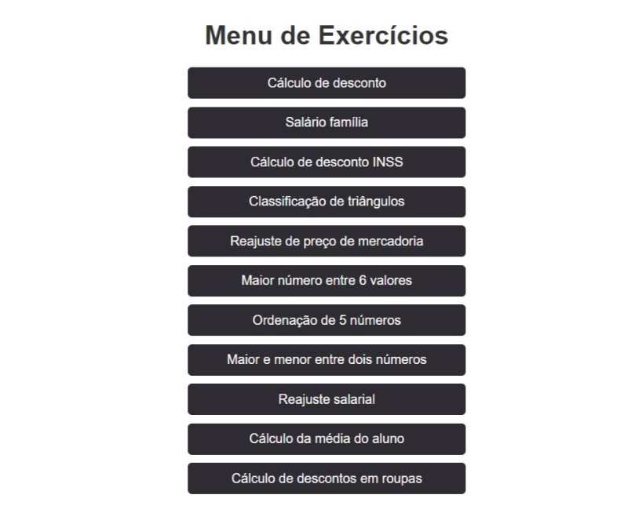
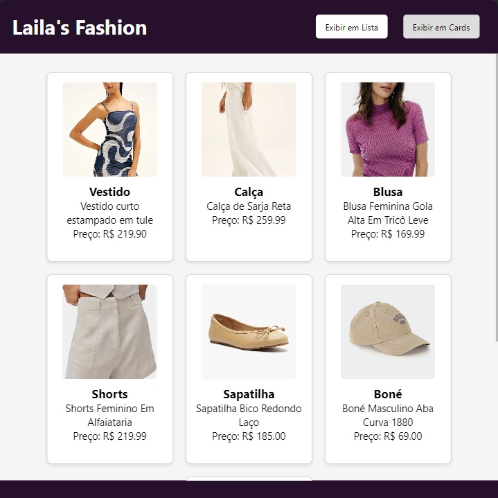
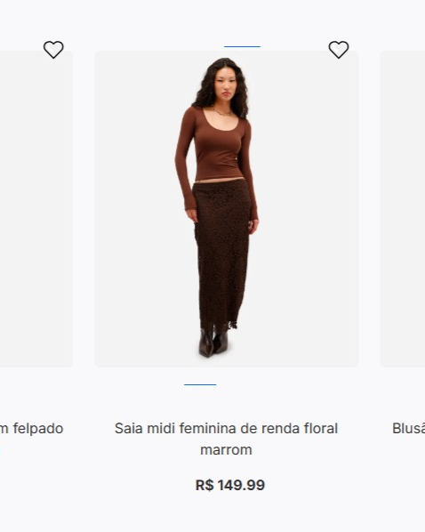

Transformando ideias em soluções digitais através de código criativo e design intuitivo. Sempre em busca de novos desafios para expandir meus conhecimentos e habilidades.
Me chamo Laila Casadei Macêdo e estou em formação como desenvolvedora fullstack. Tenho
experiência prática no desenvolvimento de sistemas completos, unindo front-end, back-end e banco
de dados de forma integrada. Já trabalhei com bibliotecas como BODY-PARSER e QUERY, e gosto
especialmente de criar soluções que sejam funcionais, organizadas e pensadas para facilitar a
vida de quem vai usá-las.
Mais do que só a parte técnica, valorizo muito a clareza na comunicação, a organização no
processo e o trabalho em equipe. Acredito que boas entregas vêm tanto do conhecimento quanto da
escuta ativa, da empatia e do cuidado com os detalhes.
Estou sempre disposta a aprender, me adaptar e contribuir em projetos.

Exercícios práticos de interface do usuário focados em usabilidade e experiência do usuário.

Página web desenvolvida para aplicar conceitos de design responsivo e acessibilidade.

A programação é essencial no desenvolvimento tecnológico atual, com impacto em diversas áreas. Meu TCC tem como objetivo explorar uma aplicação prática em um contexto diferente: a floricultura.
O trabalho aborda os conceitos e a implementação prática de soluções para criar um sistema que ajude uma floricultura a organizar, classificar e nomear suas plantas, fornecendo informações como nome, espécie, classificação botânica e imagem ilustrativa.
Essa ferramenta permitirá melhorar os processos internos da loja, evitar erros na identificação das espécies e oferecer um atendimento mais rápido e personalizado, resultando em maior satisfação dos clientes e maior eficiência operacional.
Serão discutidas as linguagens e ferramentas utilizadas, além dos desafios enfrentados durante o desenvolvimento. O trabalho visa demonstrar o conhecimento adquirido no curso de PSOF e também contribuir para a obtenção de uma boa nota.
Estou sempre aberta a novas oportunidades, colaborações ou apenas para bater um papo sobre tecnologia.